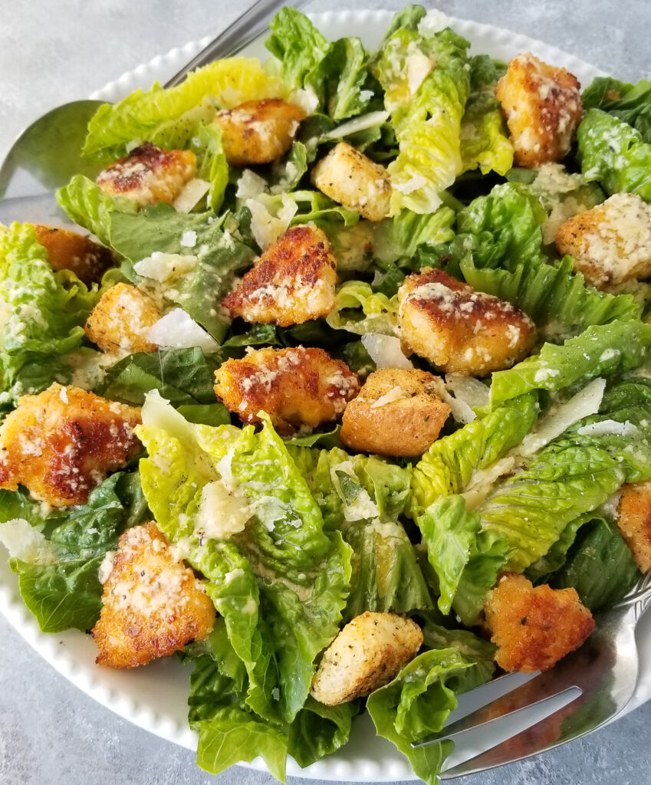

Dinner for one recipes for next time you fly solo

1. Crisp Caesar Salad:
Ingredients: Romaine lettuce, Caesar dressing, Parmesan cheese, croutons.
Preparation: Wash and chop the romaine lettuce, grate the Parmesan cheese, and prepare the croutons.
How to make: In a large bowl, toss the romaine lettuce with Caesar dressing until well coated. Sprinkle with grated Parmesan cheese and add the croutons. Toss again to combine, then serve immediately.
2. Creamy Tomato Basil Soup:
Ingredients: Ripe tomatoes, fresh basil, cream, olive oil.
Preparation: Dice the tomatoes, chop the basil leaves, and measure out the cream.
How to make: In a pot, heat olive oil over medium heat. Add diced tomatoes and cook until softened. Stir in chopped basil and cream, then simmer for 10-15 minutes. Use an immersion blender to puree the soup until smooth. Season with salt and pepper to taste.
3. Perfectly Seared Salmon with Roasted Vegetables:
Ingredients: Salmon fillet, asparagus, carrots, lemon, garlic, herbs.
Preparation: Season the salmon fillet with lemon juice, minced garlic, and herbs. Trim the asparagus and peel the carrots.
How to make: Preheat oven to 400°F (200°C). Place seasoned salmon on a baking sheet lined with parchment paper. Arrange asparagus and carrot sticks around the salmon. Drizzle everything with olive oil and season with salt and pepper. Roast for 12-15 minutes or until salmon is cooked through and vegetables are tender.
4. Comforting Creamy Mushroom Risotto:
Ingredients: Arborio rice, mushrooms, white wine, chicken or vegetable broth, Parmesan cheese.
Preparation: Clean and slice the mushrooms, grate the Parmesan cheese, and measure out the rice and broth.
How to make: In a large saucepan, sauté the mushrooms until golden brown. Add Arborio rice and cook until translucent. Deglaze with white wine and cook until absorbed. Gradually add hot broth, stirring constantly, until rice is creamy and tender. Stir in grated Parmesan cheese and season with salt and pepper.
5. Flavorful Shrimp Tacos:
Ingredients: Shrimp, tortillas, salsa, avocado, lime.
Preparation: Peel and devein the shrimp, warm the tortillas, prepare the salsa, and slice the avocado.
How to make: Season shrimp with chili powder, cumin, and garlic powder. Cook in a skillet until pink and cooked through. Warm tortillas in a dry skillet. Fill tortillas with cooked shrimp, salsa, avocado slices, and a squeeze of lime juice.